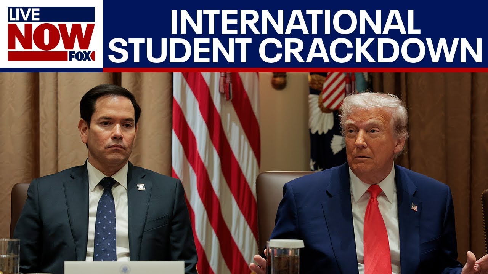

【卢比奥将撤销部分中国学生签证，特朗普政府继续与哈佛大学交锋】
Summary: The Trump administration is tightening visa policies for international students, including expanded social media checks, amid concerns over anti-Semitism and unrest. Harvard is fighting a White House decision to revoke its ability to enroll foreign students, while Chinese students face visa cancellations over political ties.
摘要： 特朗普政府收紧国际学生签证政策，包括扩大社交媒体审查，以应对反犹太主义和校园骚乱问题。哈佛大学正就白宫取消其招收外国学生资格的决定提起诉讼，而与中国政治有关联的学生面临签证撤销。

⏱️ Estimated Reading Time: 18 min
We do want to get back though uh to the really the brewing question uh that is playing out even today about foreign students at universities uh the visas that they obtain and come here on and whether or not the Trump administration uh can foreclose that very process to international students when it comes to enrollment at these universities.
我们确实需要回到那个正在发酵的问题，即关于大学外国学生的签证问题，以及特朗普政府是否能够阻止国际学生入学的流程。
Here our friend and colleague Fox News's Rebecca Caster has more details.
我们的朋友兼同事福克斯新闻的丽贝卡·卡斯特将带来更多细节。
Let's listen.
请听报道。
Dreams put on hold for international students who wish to study at US universities.
希望在美国大学学习的国际学生的梦想被搁置。
The State Department is pausing all student visa interviews while it makes changes to its vetting process, including expanded social media checks.
国务院暂停所有学生签证面谈，同时修改审查流程，包括扩大社交媒体检查。
We want to know where those students come.
我们想知道这些学生来自哪里。
Are they troublemakers?
他们是麻烦制造者吗？
What countries do they come?
他们来自哪些国家？
The pause, which is expected to be temporary, comes as the Trump administration is trying to crack down on anti-semitism on campuses.
这次暂停预计是暂时的，正值特朗普政府试图打击校园反犹太主义。
Any social media posts expressing anti-Jewish views could keep some students from being granted a visa.
任何表达反犹太观点的社交媒体帖子都可能使一些学生无法获得签证。
The president certainly had great concerns that there are foreign students, not everyone, but there are foreign students who come to this country, I do believe, who helped create this unrest.
总统显然非常担心，有些外国学生——并非所有人——但确实有一些来到这个国家的外国学生助长了这种骚乱。
Harvard is at the center of the Trump administration's battle with elite universities.
哈佛大学处于特朗普政府与精英大学斗争的中心。
Last week, the White House revoked the school's ability to enroll international students, a move Harvard is now fighting in court.
上周，白宫取消了哈佛招收国际学生的资格，哈佛目前正在法庭上对此提出异议。
Meanwhile, international students already in America feel caught in the crossfire.
与此同时，已经在美国的国际学生感到自己成了夹缝中的牺牲品。
We're all panicking.
我们都很恐慌。
We're all overwhelmed.
我们都感到不堪重负。
Uh time of uncertainty, literally like like it's I've never experienced it before.
这是一个充满不确定性的时期，真的，我从未经历过这样的时刻。
It feels very disorienting to have to try to think about whether or not I'm welcome here.
不得不思考自己在这里是否受欢迎，这让人感到非常迷茫。
Harvard and White House lawyers will be back in court for arguments on this matter Thursday.
哈佛和白宫的律师将于周四重返法庭就此案进行辩论。
In Washington, Rebecca Caster, Fox News.
福克斯新闻，丽贝卡·卡斯特在华盛顿报道。
Rebecca, thanks so much.
丽贝卡，非常感谢。
We do have a live vantage point over Boston.
我们确实有波士顿的实时画面。
Mass. Take a look at that.
马萨诸塞州，请看那里。
You see there?
看到了吗？
In the meantime though, this is the news today.
与此同时，这是今天的新闻。
I want to put this up from Secretary of State Marco Rubio.
我想分享国务卿马可·卢比奥的声明。
He says this.
他是这么说的。
The United States will begin revoking visas of Chinese students, including those with connections to the Chinese Communist Party or studying in critical fields.
美国将开始撤销部分中国学生的签证，包括那些与中国共产党有关联或学习关键领域的学生。
Let's talk about all this because it's all of the same piece.
让我们来讨论这一切，因为这些都是相关联的。
We're going to do that with Jay Green at the Heritage Foundation.
我们将与传统基金会的杰伊·格林一起讨论。
He joins me.
他加入了我们的讨论。
Um Jay, good to see you here.
嗯，杰伊，很高兴见到你。
I know you obviously have been following this extremely closely.
我知道你显然一直在密切关注此事。
Seems like there's kind of two strains of thought.
似乎有两种思路。
Revoking visas from international students who already have a visa, they already got one and they're already enrolled and then whole cloth preventing international students from enrolling at Harvard Cart Blanch.
一种是撤销已经持有签证并已入学的国际学生的签证，另一种是全面禁止国际学生进入哈佛。
Uh can you help us tease out those strains?
你能帮我们梳理一下这些思路吗？
So, um look, coming to the United States to study is uh a privilege, not a right.
嗯，你看，来美国学习是一种特权，而不是权利。
And so students have to apply for visas and they have to follow certain rules.
因此，学生必须申请签证并遵守某些规则。
And part of the problem is that we have 1.1 million foreign students in the United States.
问题的一部分在于，美国有110万外国学生。
And that's actually too many for the US government really to keep track of and to ensure are following the rules.
这对美国政府来说实在太多了，难以追踪并确保他们遵守规则。
So they depend on the universities that are hosting those students to cooperate to actually enforce rules on those students and report violations to the government so that visas can be revoked.
因此，他们依赖接收这些学生的大学合作，实际执行对这些学生的规定，并向政府报告违规行为，以便撤销签证。
The problem uh is that many of these selective universities, Harvard, Colombia, MIT um appear to be failing to enforce their rules in order to shield international students from consequences.
问题是，许多选择性大学，如哈佛、哥伦比亚、麻省理工等，似乎未能执行规定，以保护国际学生免受后果。
So they're acting like sanctuary cities where they don't want the students uh deported.
因此，他们的行为就像庇护城市，不希望学生被驱逐出境。
So they don't crack down on rules, they don't suspend them, and they don't report the information to the government.
因此，他们不严厉打击违规行为，不暂停学生资格，也不向政府报告信息。
This has forced the Trump administration to demand disciplinary records from Harvard so that they could find out who's breaking the rules and Harvard is refusing to turn over those records.
这迫使特朗普政府要求哈佛提供纪律记录，以便查明谁在违规，而哈佛拒绝交出这些记录。
And it's because Harvard refused to turn over the records that the Trump administration has suspended the ability of Harvard to participate in enrolling foreign students.
正是因为哈佛拒绝交出记录，特朗普政府暂停了哈佛招收外国学生的资格。
Now, that does not revoke the visas of the students there.
现在，这并不会撤销那里学生的签证。
They they still have visas.
他们仍然持有签证。
They can transfer to other schools.
他们可以转到其他学校。
They just wouldn't be able to enroll at Harvard this fall.
他们只是今年秋季无法在哈佛入学。
So, you just kind of laid out kind of the rationale from the Trump administration about why they're doing this.
所以，你刚刚大致阐述了特朗普政府这样做的理由。
I I got to ask you though, do they have the power and the authority to do this because this was swiftly, you know, temporarily pause uh this federal judge there in Boston suspended enforcement of this decision until the courts can consider the matter.
但我必须问你，他们是否有权力和权威这样做，因为波士顿的一位联邦法官迅速暂停了这一决定的执行，直到法院审议此事。
They'll be in court very, very soon, later this week.
他们将在本周晚些时候很快出庭。
So, does a presidential administration, does the executive branch, can it tell Harvard, you can't take in any more international students until you do X, Y, and Z?
那么，总统行政机构、行政部门能否告诉哈佛，在你完成X、Y、Z之前，不能再招收国际学生？
Look, the courts will ultimately decide.
看，最终将由法院决定。
Um, and you can expect that Harvard is likely to win in the first round uh because they go to judges in Boston who are friendly to them.
嗯，你可以预期哈佛很可能在第一轮获胜，因为他们去找波士顿对他们友好的法官。
Uh, and that's why they win initially.
这就是为什么他们最初会赢。
Now whether they win ultimately is unclear but the point is that even if Harvard wins in court and they are allowed to continue enrolling foreign students that doesn't mean that their students will continue getting visas to enter the country and come study with them.
现在尚不清楚他们最终是否会赢，但关键是，即使哈佛在法庭上获胜并被允许继续招收外国学生，这并不意味着他们的学生将继续获得签证进入该国并与他们一起学习。
That has to be done by embassies and consulates around the country and those decisions the decision to grant or deny a visa is not subject to judicial review.
这必须由全国各地的使馆和领事馆完成，而这些决定——批准或拒绝签证——不受司法审查。
This is a Supreme Court doctrine called consular non-revability.
这是最高法院的一项原则，称为领事不可复审性。
So, so even if Harvard wins, they're likely to lose anyway.
因此，即使哈佛赢了，他们很可能还是会输。
And and so I suspect this is all just positioning for what will ultimately be an agreement between Harvard and the Trump administration.
因此，我怀疑这一切只是为了哈佛和特朗普政府最终达成协议而进行的姿态。
Yeah.
是的。
I have to ask um because obviously we use here especially in the media the word unprecedented a lot with regard to the Trump administration.
我必须问，因为显然我们在这里，尤其是在媒体中，经常用“前所未有”这个词来形容特朗普政府。
Has this ever been adjudicated, this issue in the federal courts, at the Supreme Court, whether a presidential administration can meddle into the kind of good working order or not of a university when it comes to the enrollment of foreign students, the revoking of their visas?
这个问题是否曾在联邦法院或最高法院裁决过，即总统行政机构是否可以干预大学在招收外国学生和撤销签证方面的良好运作秩序？
Has it ever been adjudicated?
是否曾有过裁决？
Are we crossing the Rubicon here?
我们是否正在跨越卢比孔河？
Actually, these are not such unprecedented uh incidents.
实际上，这些并不是那么前所未有的事件。
They they are in accumulation and in speed.
它们只是在积累和速度上前所未有。
All of that is is unprecedented.
所有这些是前所未有的。
But the fact that a presidential administration has intervened uh with private universities and told them they need to change operations in order to comply with civil rights law.
但事实是，总统行政机构曾干预私立大学，并告诉他们需要改变运作以遵守民权法。
Obama did that.
奥巴马曾这样做过。
Obama did that with Title 9.
奥巴马曾根据《教育法修正案第九条》这样做。
He told all the universities they had to change their due process procedures um with regard to sexual harassment or assault charges.
他告诉所有大学，他们必须改变关于性骚扰或性侵指控的正当程序程序。
Um, universities resisted, said that they were autonomous, that they didn't want to change.
嗯，大学抵制，称他们是自治的，不想改变。
Obama forced them.
奥巴马强迫他们。
Uh, Yeshiva University just last year was forced to have an LGBTQ club.
嗯，叶史瓦大学去年刚刚被迫成立LGBTQ俱乐部。
Uh, the university said, "We're private. It's against our mission, against our principles."
嗯，大学说：“我们是私立的。这违背了我们的使命和原则。”
Civil rights law was interpreted as forcing them to do so.
民权法被解释为迫使他们这样做。
Okay?
明白吗？
And so the idea that that universities are forced to do things including private universities because administrations believe civil rights requires it uh is something that actually occurs fairly regularly.
因此，大学——包括私立大学——被迫做某些事情，因为行政机构认为民权法要求这样做，这实际上是相当常见的。
So just to kind of play out the hypothetical here, say Harvard didn't take any federal grants, say their endowment was not tax-exempt.
那么，假设一下，假设哈佛不接受任何联邦拨款，假设他们的捐赠基金不免税。
Um say they didn't have hardly any affiliation with the federal government.
嗯，假设他们几乎与联邦政府没有任何联系。
Um would we still see you think some of these actions or or could they be left alone?
嗯，你认为我们还会看到这些行动吗？或者他们可以不受干预吗？
So they if they don't want to have any interference uh they could be left alone if they simply decline taking taxpayer money.
因此，如果他们不想受到任何干预，只要拒绝接受纳税人的钱，他们就可以不受干预。
Um uh Hillsdale College uh in Michigan is a good example of a of a an institution that preserves its autonomy and operates the way it wishes because it does not take taxpayer money.
嗯，密歇根州的希尔斯代尔学院就是一个很好的例子，它保持自治并按自己的意愿运作，因为它不接受纳税人的钱。
Uh Harvard takes quite a lot of taxpayer money even though it has more than $50 billion endowment and therefore is subject to the civil rights act and title six and title nine of the civil rights act and then they have to work things out with the Trump administration on the issue of foreign students.
嗯，哈佛接受了大量纳税人的钱，尽管它有超过500亿美元的捐赠基金，因此受《民权法案》第六条和第九条的约束，然后他们必须在外国学生问题上与特朗普政府达成协议。
However, no university is exempt from needing to get visas and follow the rules for visas for their students.
然而，没有任何大学可以免除为学生获取签证并遵守签证规则的需要。
And so that is something that every university must follow because entry to this country is controlled by the administration.
因此，这是每所大学都必须遵守的，因为进入这个国家是由行政机构控制的。
Yes, I'm familiar with Hillsdale College.
是的，我熟悉希尔斯代尔学院。
My father is an alum here.
我父亲是那里的校友。
I I want to move on though uh to another side of this story here.
不过，我想继续讨论这个故事的另一个方面。
Uh the announcement by Secretary Rubio today uh because it's not just enrolling international students is if they violate X, Y, and Z, they will have them revoked.
嗯，卢比奥部长今天的声明，因为不仅仅是招收国际学生的问题，而是如果他们违反X、Y、Z，他们的签证将被撤销。
You see here from Secretary Rubio saying the United States will begin revoking visas of Chinese students including those with connections to the Chinese Communist Party or studying in critical fields.
你在这里看到卢比奥部长说，美国将开始撤销部分中国学生的签证，包括那些与中国共产党有关联或学习关键领域的学生。
Are there free speech issues here Jay?
杰伊，这里是否存在言论自由问题？
Not when it just comes to this but when it comes to some of these you know who have proclivities toward the Palestinian cause the writings that they have done uh the the speeches that they have made their affiliation with certain groups.
不仅仅是这个问题，还包括一些倾向巴勒斯坦事业的人，他们的文章、演讲以及他们与某些团体的联系。
Do you see any gray area there on free speech first amendment grounds for these students?
对于这些学生，你是否看到在言论自由第一修正案基础上的灰色地带？
Yes.
是的。
Who are foreign students?
外国学生是谁？
So actually I don't see any free speech issues here.
所以实际上我在这里看不到任何言论自由问题。
So there is no free speech exemption to title six of the civil rights act.
因此，《民权法案》第六条没有言论自由的豁免。
That is, universities must ensure that all students are able to access the benefits of their education and cannot be denied those benefits because of their race, color, or national origin.
也就是说，大学必须确保所有学生都能获得教育的福利，不能因为种族、肤色或国籍而被剥夺这些福利。
Jews are covered under this under the national origin term.
犹太人被涵盖在“国籍”这一术语下。
And so, um, you can't, uh, uh, do things that inter interfere with the ability of of people to access their education and say, well, I'm just it's just my speech.
因此，嗯，你不能做干扰人们获得教育能力的事情，然后说，嗯，这只是我的言论。
Uh um so remember the civil rights violations that we're concerned about here are not simply things that people say about how they feel about uh the war in the Middle East uh or how they feel about Palestinian uh cause.
嗯，所以请记住，我们在这里关注的民权侵犯不仅仅是人们关于中东战争或巴勒斯坦事业的感受。
Uh none of those things are violations of civil rights.
嗯，这些都不是民权侵犯。
What our violations and what all of these universities have permitted, enabled, and even rewarded is blocking Jewish students from crossing campus and going to their classes, disrupting the normal educational process by standing up in the middle of class and shouting slogans.
我们的侵犯以及所有这些大学允许、纵容甚至奖励的是阻止犹太学生穿过校园去上课，通过在课堂上站起来喊口号扰乱正常的教育过程。
Um, and even assaulting Jewish students, which has twice occurred at Harvard.
嗯，甚至袭击犹太学生，这在哈佛已经发生过两次。
And in fact, one of the students accused of of assaulting a Jewish student is has been declared marshall of the commencement at the Divinity School this week.
事实上，其中一名被指控袭击犹太学生的学生本周被宣布为神学院毕业典礼的司仪。
Yes.
是的。
And so they continue to reward students who don't say things but who do things that interfere with the ability of Jews to get the benefits of their education.
因此，他们继续奖励那些不说话但做干扰犹太人获得教育福利的事情的学生。